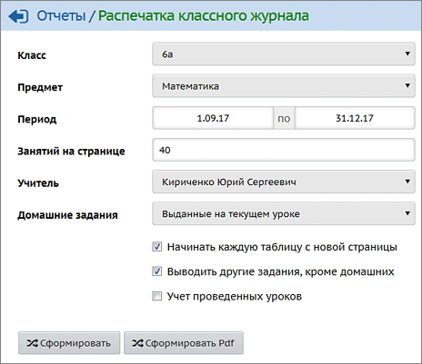
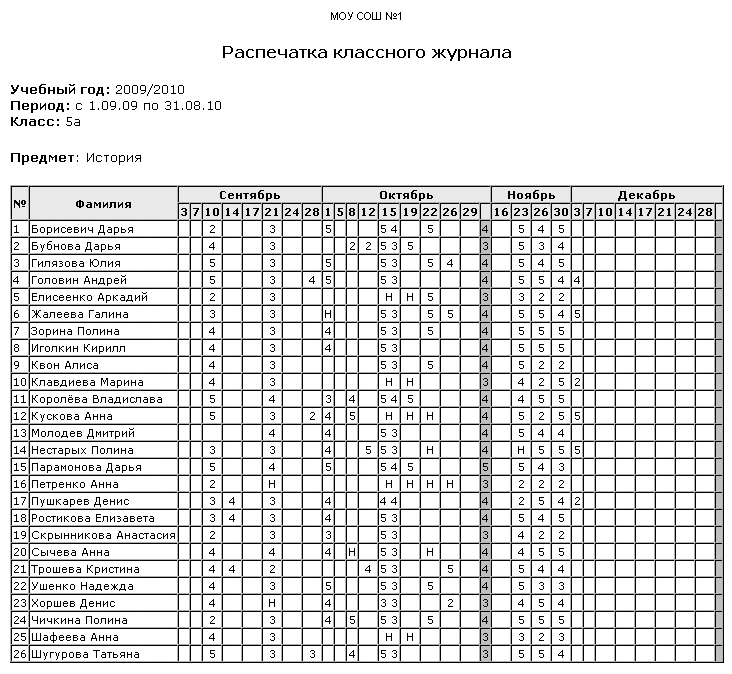
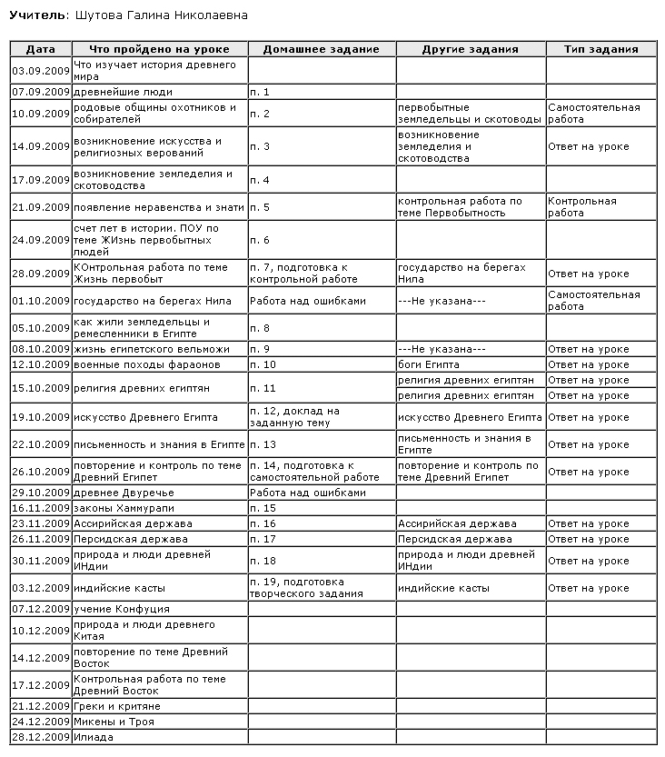

Отчёт доступен для просмотра пользователям, имеющим право доступа «Просматривать отчеты во всех классах» (по умолчанию – это Администратор и Завуч).
Распечатать Классный журнал можно для определенного класса
| · | по отдельно взятому предмету;
|
| · | по всем предметам, преподаваемым в выбранном классе.
|
|
|

Вариант для быстрой распечатки журнала можно получить нажатием кнопки Печать
Вариант для экспорта в программы MS Excel или OpenOffice Calc и последующего анализа их средствами получают нажатием кнопки
Вы можете гибко настроить нужный вариант печати. Для этого выберите параметры в фильтрах:
| · | "Интервал" - укажите две даты в пределах учебного года, определяющие диапазон вывода информации.
|
| Если в заданный интервал попадает конец периода (четверти, триместра), выводится колонка с итоговыми отметками за период, и затем продолжение журнала текущих отметок.
|
| Если в заданный интервал попадает конец учебного года, то дополнительно выводятся колонки по итогам года: "итог за год", "экз", "итог".
|
| · | "Занятий на странице" - укажите, за какое количество уроков будут выведены данные на одну страницу. Следует подобрать этот параметр так, чтобы каждая таблица умещалась на одной странице.
|
| · | "Учитель": можно выбрать другого учителя для отображения в распечатке журнала (если учитель-предметник, например, часть времени не вёл занятий в выбранном классе).
|
| · | "Начинать каждую таблицу с новой страницы" - если не удаётся подобрать "количество занятий на странице", то установите эту опцию для автоматического переноса таблицы на новую страницу. И наоборот, эту опцию можно снять для уменьшения расхода бумаги.
|
| · | "Выводить другие задания, кроме домашних" - если установлена эта опция, то в стандартную таблицу добавляются ещё два столбца: "Другие задания" и "Тип задания".
|
| · | "Учет проведенных уроков" - если установлена эта опция, то по окончании каждого предмета в отчёт будет добавлено количество часов по плану и проведённое фактически.
|
В отчёте чередуются таблицы, соответствующие левой и правой сторонам традиционного бумажного журнала.
Если выбрать "Предмет": Все, то будет выведен стандартный "Титульный лист", содержащий название ОУ, учебный год, класс и ФИО классного руководителя.
При расчёте количества часов используется возможность задавать каникулы не только для всей школы, но и для отдельных классов (см. "Каникулы и параллели").
Пример отчета:

